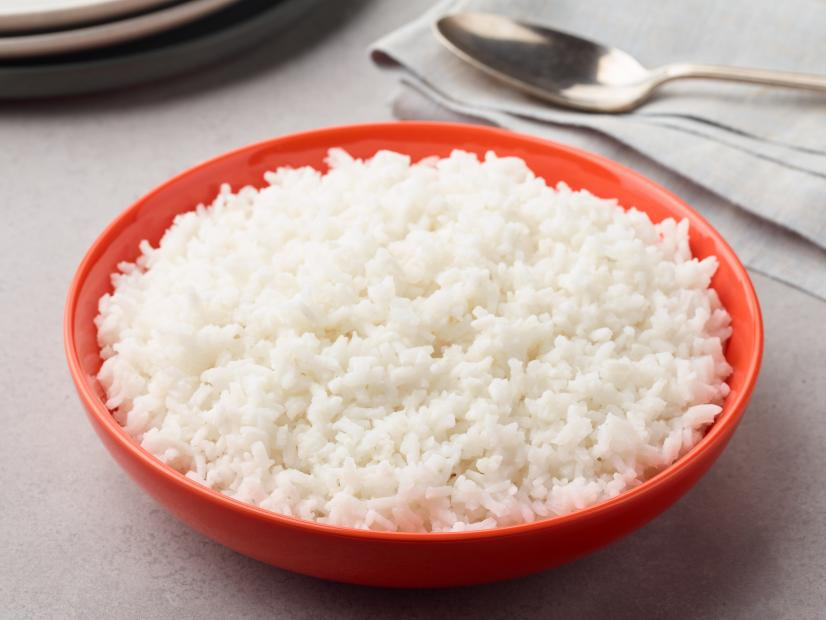

Rice

Rice in every culture!
If we start to search all around the world, we can find deliciuos dishes
based on rice. This particular grain have many variations of taste and aspects,
perhaps for this reasons most of the cultures around the globe adopted this fantastic
font of carbohydrates (on par with Pasta)as an important feeding support.
Also you can accompany a nutrient plate of rice with others ingredients, as an example:
- Types of salads
- Chicken
- Sausages
- Beans
- Avocado
- Steaks
- Ribs
- Seafood ingredients
Famous dishes based with rice
Famous recipes that can be find in most of the restaurant all around the world was invented in different counties bringing to your palate a taste of theyr culture,
ther is some examples:
- Risotto
- Paella
- Sushi
- Pad Thay Fried Rice
- Arroz con habichuela
How to cook Rice
- Clean the rice with some wather
- Boil 2 cups of wather in a covered pot
- When it start to boil, add 1/4 teaspoon of salt and 1 cup of rice
- Cover the pot for around 20 min
- Once the rice looks as fluffy as can be, take it off the burner and let sit for 5 minutes
- Voilà! You can serve the rice on your plate and accompany with guarnitions as your pleasant